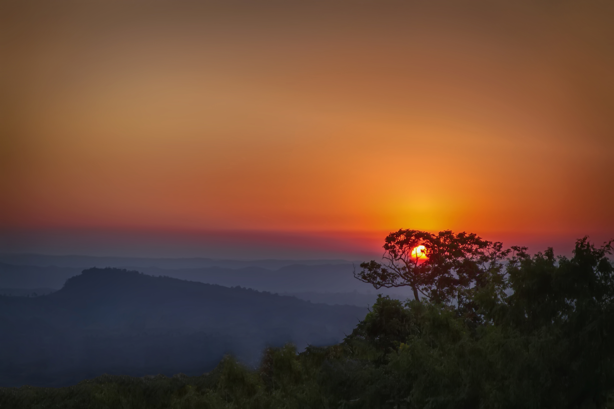

Coxes-Bazar
Author:Md.Shiam Hossen

Cox's Bazar (/ˌkɒksɪz bəˈzɑː/; Bengali: কক্সবাজার, romanized: Kôksbajar; pronounced [kɔksbadʒaɾ]) is a city, fishing port, tourism centre, and district headquarters in southeastern Bangladesh. The iconic Cox's Bazar Beach, one of the most popular tourist attractions in Bangladesh, is the longest uninterrupted beach in the world.[1] It is located 150 km (93 mi) south of the city of Chittagong. Cox's Bazar is also known by the name Panowa, which translates literally as "yellow flower." An old name was "Palongkee". Kutupalong refugee camp with more than a million Rohingya refugees is in Cox's Bazar.[2][3]
The city covers an area of 23.4 km2 (9.0 sq mi) with 58 mahallas and 27 wards and as of 2022 had a population of nearly 200,000.[4] Cox's Bazar is connected by road and air with Chittagong.[5][6]
The modern Cox's Bazar derives its name from Captain Hiram Cox, an officer of the British East India Company, a Superintendent of Palongkee outpost. To commemorate his role in refugee rehabilitation work, a market was established and named after him. It is one of Bangladesh's main tourist spots. The city has the longest uninterrupted natural beach in the world.[7] In 2023 Bangladesh evacuated over 50,000 people to safe shelters as Cyclone Mocha approached.[8]
History
During the early 9th century, the greater Chittagong area, including Cox's Bazar, was under the rule of Arakan kings until its conquest by the Mughals in 1666.[9] When the Mughal Prince Shah Shuja was passing through the hilly terrain of the present-day Cox's Bazar on his way to Arakan, he was attracted to its scenic and captivating beauty. He commanded his forces to camp there. His retinue of one thousand palanquins stopped there for some time. A place named Dulahazara, meaning "one thousand palanquins," still exists in the area. After the Mughals, the place came under the control of the Tipras and the Arakanese, followed by the Portuguese and then the British.
The name Cox's Bazar originated from the name of a British East India Company officer, Captain Hiram Cox, who was appointed as the Superintendent of Palonki (today's Cox's Bazar) outpost. He succeeded Warren Hastings, who became the Governor of Bengal following the British East India Company Act in 1773. Cox embarked upon the task of rehabilitation and settlement for the Arakanese refugees in the area.[10] He rehabilitated many refugees in the area, but died in 1799 before finishing his work. To commemorate him, a market was established and named after him, called Cox's Bazar. Cox's Bazar was first established in 1854 and became a municipality in 1869.[9]
After the Sepoy Mutiny in 1857, the British East India Company was highly criticised on humanitarian grounds, especially for its opium trade monopoly over the Indian Sub-Continent. However, after its dissolution on January 1, 1874, the company's assets, including its armed forces, were acquired by the British Crown. After this takeover, Cox's Bazar was declared a district of the Bengal Province under the British Crown.
20th century
Cox's Bazar Map from Series U542, US Army Map Service, 1955
Just after the end of British rule in 1947, Cox's Bazar became part of East Pakistan. Captain Advocate Fazlul Karim, the first post-independence chairman of Cox's Bazar Municipality, established the Tamarisk Forest along the beach. He wanted to attract tourists as well as to protect the beach from tsunamis. He donated much of his father-in-law's and his own lands as sites for constructing a public library and a town hall. Karim was inspired to build Cox's Bazar as a tourist spot after seeing beaches of Bombay and Karachi, and was a resort pioneer in developing Cox's Bazar as a destination. Karim established a maternity hospital, the stadium and the drainage system by procuring grants from the Ford Foundation and Rockefeller Foundation through correspondence. T. H. Matthews, the principal of the Dacca Engineering College (1–49~1954), was a friend who had helped him in these fundraising efforts. Engineer Chandi Charan Das was the government civil engineer who worked on all these projects.
In 1959 the municipality was turned into a town committee.[9]
In 1961 the Geological Survey of Pakistan initiated investigation of radioactive minerals like monazite around the Cox's Bazar sea-beach area.[11]
In 1971, Cox's Bazar wharf was used as a naval port by the Pakistan Navy's gunboats. This and the nearby airstrip of the Pakistan Air Force were the scene of intense shelling by the Indian Navy during the Bangladesh Liberation War. During the war, Pakistani soldiers killed many people in the town, including eminent lawyer Jnanendralal Chowdhury. The killing of two freedom fighters named Farhad and Subhash at Badar Mokam is also recorded in history.[12]
After Bangladesh's independence, Cox's Bazar started to receive administrative attention. In 1972 the town committee of Cox's Bazar was once again turned into a municipality. In 1975, The Government of Bangladesh established a pilot plant at Kalatali.[11] In 1984, Cox's Bazar subdivision was promoted to a district, and five years later (in 1989) the Cox's Bazar municipality was elevated to B-grade.[9] In 1994 (jobs) the Marine Fisheries and Technology Station (MFTS) was established at Cox's Bazar. MFTS is a research station of Bangladesh Fisheries Research Institute (BFRI) headquartered in Mymensingh. The station covers a land area of four hectares and contains five laboratories.[13]
21st century
In September 2012 the municipality was the site of the Cox's Bazar and Ramu riots, where local Muslims attacked the Buddhist community over an alleged Quran desecration posted to Facebook.[14]
In 2017, hundreds of thousands of Rohingya refugees from Myanmar arrived in Cox's Bazar District, amounting to 725,000 in October 2018; the resulting Kutupalong refugee camp became the largest refugee camp in the world.[15]
On 14 May 2020, the first confirmed case of COVID-19 was detected among the 860,000 refugees who lived in Cox's Bazar district.[16]
In March 2021, a fire at the refugee camp left 15 dead and some 400 missing and displaced more than 45,000 mostly Rohingya refugees.[17][18]
Geography and climate
Cox's Bazar is located 150 km (93 mi) south of the divisional headquarter city of Chittagong. Cox's Bazar town has an area of 6.85 km2 (2.64 sq mi), and is bounded by Bakkhali River on the north and East, Bay of Bengal in the West, and Jhilwanj Union in the south.[19]
The beach in Cox's Bazar has a gentle slope and with an unbroken length of 155 km (96 mi) it is often termed the "longest natural unbroken sea beach" in the world.
Cox's Bazar lies on a coastal plain in the southeastern corner of Bangladesh. From above, the plain appears to bulge out into the Bay of Bengal. Along the shore is an extensive area of beach and dunes. Most of the city is built on a floodplain that is lower in elevation than the dunes, making it more susceptible to flooding due to cyclones and storm surges. The Cox's Bazar coastal plain was formed after the sea reached its present level around 6,500 years ago, with the area of the current floodplain originally forming a sediment sink that has since been gradually filled in by the Bakkhali river as well as smaller streams coming down from the hills.[20]
The climate of Bangladesh is mostly determined by its location in the tropical monsoon climate region: high temperatures, heavy rainfall, and generally excessive humidity, with distinct seasonal variations.[21] The climate of Cox's Bazar is mostly similar to the rest of the country, but with an even wetter southwest monsoon season due to its coastal location. The annual average temperature in Cox's Bazar is a maximum of 30.1 °C (86.2 °F) and a minimum of 22.0 °C (71.6 °F). The average annual rainfall is 3,524 mm (138.7 in).
Seint-Mertin
Author:Md.Shiam Hossen

Saint Martin Island (Bengali: সেন্টমার্টিন দ্বীপ) is a small island (area only 3 km2) in the northeastern part of the Bay of Bengal, about 9 km south of the tip of the Cox's Bazar-Teknaf peninsula, and forming the southernmost part of Bangladesh. There is a small adjoining island that is separated at high tide, called Chera Dwip. It is about 8 kilometres (5 miles) west of the northwest coast of Myanmar, at the mouth of the Naf River.
History and description
Millennia ago, the island used to be an extension of the Teknaf peninsula, but portion of this peninsula later got submerged and thus the southernmost part of the aforementioned peninsula became an island, and was disconnected from the Bangladesh mainland. The island was first settled in the 18th century by Arabian merchants, who named it "Jazira". During British occupation the island was named after the then Deputy Commissioner of Chittagong Mr. Martin as St. Martin Island.[3] Local names of the island are "Narikel Jinjira"[4] which means "Coconut Island", and "Daruchini Dwip" which means "Cinnamon Island". It is the only coral island in Bangladesh.
Administration
The island makes up the Saint Martin's Union Parishad. It has 9 villages/areas:
UP complex of Saint Martin Island
Paschim Para (Western Neighbourhood)
Deil Para
Uttar Para (Northern Neighbourhood)
Majher Para (Middle Neighbourhood)
Purba Para (Eastern Neighbourhood)
Konar Para (Edge Neighbourhood)
Nazrul Para (Neighbourhood of Nazrul)
Golachipa (literally "narrow neck")
Dakkhin Para (Southern Neighbourhood)
Inhabitants
Coral in St. Martin's Island .
Most of the island's approximately 3,700[5] inhabitants live primarily from fishing. The other staple crops are rice and coconut. Being very common on the island, algae are collected, dried, and exported to Myanmar. Between October and April, the fishermen from neighboring areas bring their caught fishes to the island's temporary wholesale market. However, imports of chicken, meat and other foods come in from the mainland Bangladesh and Myanmar. As the centre and the south are mainly farmland and makeshift huts, most of the permanent structures are around the far north.
During the rainy season, because of the dangerous conditions on the Bay of Bengal, the inhabitants have no scope to go to the mainland (Teknaf) and their life can become dangerous. There is a hospital on the island, but in the past there has often been no doctor.[citation needed]
Biological diversity and bioprospecting potential
Research by the Bangladesh Department of Environment (DoE), with the assistance of the UNDP, demonstrates that the island has a number of ecosystems, including coral-rich areas, mangroves, lagoons and stony areas. The island is a safe haven to various species of fauna. The presence of 153 species of sea weeds, 66 species of coral, 187 species of oysters, 240 species of fish, 120 species of birds, 29 species of reptiles and 29 species of mammals were recorded at the St Martin's Island in 2010.[6][7][8][9] The area in vicinity has been declared as a Marine Protected Area in 2022.[10][11]
Marine sponges and their associated microbes produce an enormous array of antitumor, antiviral, anti-inflammatory, immunosuppressive, antibiotic and other bioactive molecules.[9][12][13] S.I. Paul et al. (2021)[9] explored a total of 15 bacterial genera comprising 31 different bacterial species from the 9 collected marine sponges of the island. Among them Bacillus subtilis strains WS1A and YBS29 have great probiotic potential.[9][14][15] It can produce antimicrobial compounds and prevent motile Aeromonas septicemia disease (a major fish disease in Bangladesh) of Rohu (Labeo rohita).[9][14] Bacillus subtilis strains WS1A and YBS29 produce different types of antimicrobial peptides.[9][14][15] Fish (Labeo rohita) fed with extracellular products of Bacillus subtilis strains WS1A and YBS29 develop complete disease resistance.[9][14][15] The metabolites and bioactive compounds derived from marine sponges and sponge microbes also afford abundant potential for pharmaceutical and biotechnological applications.[13]
Transportation
M.V. Bangali. (32191488734)
The only way to reach Saint Martin Island is by water transportation: boats and ships (mostly for tourists) from Cox Bazar and Teknaf. It is the southernmost union of Bangladesh situated in 120 km away from the Cox's Bazar city.[16] The only internal transport for island is non motorized van (pulled by man.) The roads are made of concrete, and their condition are decent. All most hotels run generators until 11 PM which are not allowed afterwards, so they then rely on solar power, which is popular throughout the island. There is no electricity supply from the national grid since a hurricane in 1991.
kuakata-sea
Author:Md.Shiam Hossen

Kuakata (Bengali: কুয়াকাটা) (Burmese/Rakhine/Arakanese:ကုအာကာတ) is a town in southern Bangladesh known for its panoramic sea beach.[1][2] Kuakata beach is a sandy expanse 18 kilometres (11 mi) long and 3 kilometres (1.9 mi) wide.[3] From the beach one can have an unobstructed view of both sunrise and sunset over the Bay of Bengal.[1]
Kuakata
কুয়াকাটা
Daughter of Sea (সাগরকন্যা)
Town
From top: Fishing, Sunset at Kuakata beach, Buddhist temples, Sea shore, Mangrove forest and Kuakata Grand Hotel & Sea Resort
Nickname: Daughter of Sea (সাগরকন্যা)
Kuakata is located in Barisal divisionKuakataKuakata
Show map of Barisal division
Show map of Bangladesh
Show all
Coordinates: 21°49′16″N 90°07′11″E
Country Bangladesh
Division Barisal Division
District Patuakhali District
Upazila Kalapara
Time zone UTC+6 (BST)
Etymology
The name Kuakata originated from the word 'kua' — the Bengali word for "well" which was dug on the seashore by the early Rakhine settlers (Burmese tribes) in quest of collecting drinking water.[4] They landed on the Kuakata coast in the 18th century after being expelled from Arakan (Myanmar) by the Burmese extremists.[5] Afterwards, it has become a tradition of digging wells in the neighbourhoods of Rakhaine tribes for water.
Geography
Kuakata is situated in Kalapara Upazila, Patuakhali District.[6] It is about 320 kilometres (200 mi) south of Dhaka, the capital, and about 70 kilometres (43 mi) from the district headquarters.[1]
Demographics
According to the 2011 Bangladesh census, Kuakata had 2,065 households and a population of 9,077.[7]
Culture
Kuakata Beach
Sunrise at Kuakata beach
Sunset at Kuakata beach
Kuakata is a place of pilgrimage for Hindu and Buddhist communities. Innumerable devotees arrive here at the festivals of 'Rush Purnima' and 'Maghi Purnima'. On these occasions the pilgrims take holy baths at the bay and participate in the traditional fairs.[1] One may visit a 100-year-old Buddhist temple where the statue of Goutama Buddha and two 200-year-old wells are located.
Tourism
The town Kuakata has sea beach named Kuakata Beach. Many tourists visit the place to see the beach although it hasn’t international recognition like Cox's Bazar Beach but it is popular in Bangladesh. There are many places tourist visit such as:
Kuakata National Park
Kuakata Ecopark
Forest of Fatra: The protected mangrove forest on the western side of the beach is known as the 'second Sundarban'
Well of Kuakata: At the beginning of Rakhine village Keranipara near Kuakata Beach is an ancient well near a Buddhist monastery.
Shima Buddhist Monastery: In front of the ancient well is the ancient Seema Buddhist Vihara, which contains a meditating Buddha image made of Ashta dhatu weighing about thirty-seven maunds.
Rakhaine settlement of Keranipara: Keranipara, the village of the Rakhine tribesmen, begins in front of Seema Buddhist Vihar;
Alipur Port: About four kilometers north of Kuakata is Alipur Mohipur, one of the largest fishing centers in the southern region;
Mishripara Buddhist Monastery: About eight kilometers east of Kuakata beach, Misripara, home to Rakhine tribes, has a Buddhist monastery that houses the largest Buddhist statue in the subcontinent.
Forest of Gangamati: Gangamati or Ghazmati forest along the Gangamati canal east of Kuakata beach.
Gallery
Kuakata Beach
Kuakata Beach
Beach
Beach
Mangrove forest
Mangrove forest
Kuakata at early morning
Kuakata at early morning
Kuakata Beach
Kuakata Beach
Kuakata Sea Beach
Kuakata Sea Beach
A horseman roaming on Kuakata beach
A horseman roaming on Kuakata beach
See also
List of cities and towns in Bangladesh
Cox's Bazar – a tourist beach town in southeastern Bangladesh
Patenga – a tourist beach in the city of Chittagong
References
"Tourist Attractions in Bangladesh". Bangladesh Parjatan Corporation. Archived from the original on 19 July 2011.
"List of Bangladeshi Villages". Travel Tips. USA Today. Retrieved 4 April 2015.
Kabir, Ekramul (2012). "Kalapara Upazila". In Islam, Sirajul; Jamal, Ahmed A. (eds.). Banglapedia: National Encyclopedia of Bangladesh (Second ed.). Asiatic Society of Bangladesh.
Aouwal, Abdul (2016). "Kuakata National Park of Bangladesh". Ontaheen. Archived from the original on 12 August 2016. Retrieved 26 June 2016.
Majida, Mustapha (2005). The Rakhaines: Aborigines in Bangladesh. Dhaka: Mowla Brothers. ISBN 978-9844104662.
"NGA GeoName Database". National Geospatial-Intelligence Agency. Retrieved 9 January 2016.
"Population Census 2011: Patuakhali Table C-01" (PDF). Bangladesh Bureau of Statistics. Archived from the original (PDF) on 13 November 2014. Retrieved 11 July 2014.
External links
Wikimedia Commons has media related to Kuakata.
কুয়াকাটা সমুদ্র সৈকত [Kuakata beach]. Kalapara Upazila (in Bengali). Archived from the original on 8 June 2016.
Kuakata Travel Guide
Sajek-belly
Author:Md.Shiam Hossen

Sajek Valley (Bengali: সাজেক উপত্যকা) is a popular tourist spot in Bangladesh, situated among the hills of the Kasalong range of mountains in Sajek union parishad, Baghaichhari Upazila in Rangamati District. The valley is located 450 metres (1,480 ft) above sea level. It is known as the Queen of Hills and Roof of Rangamati.[1]
Name and significance
The designation of Sajek Valley is derived from the Sajek River, which originates from the Karnaphuli river. Serving as a natural boundary, the Sajek River delineates the border between Bangladesh and India.[3]
Geography
Sajek is a union parishad located in the north of Chittagong Hill Tracts, under Baghaichari upazila in Rangamati Hill District. It is situated about 70 kilometres (43 mi) to 80 kilometres (50 mi) from Khagrachhari.[2][4] The valley is located close to the Indian border state of Mizoram.[3]
Sajek Valley is known for its natural environment and is surrounded by mountains, dense forest, and grassland hill tracks. Many small rivers flow through the mountains, among which the Kachalong and the Machalong are notable. On the way to Sajek valley, one has to cross the Mayni range and the Mayni river. The road to Sajek features steep inclines and descents.[5]
People and culture
The inhabitants of Sajek valley comprise various ethnic minority groups, including the Chakma, Marma, Tripuri, Pankho, Lushai, and other indigenous communities. In this community, there is a notable involvement of women in economic pursuits, particularly in activities such as fruit and vegetable picking. While proficiency in Bengali may not be widespread among them, the younger generation often possesses some degree of proficiency in English.[5]
Transportation
The valley is more conveniently accessed via Dighinala in the Khagrachari district. Travelers can reach Khagrachari from Dhaka by bus, with options for both AC and Non-AC buses available. Covering a distance of approximately 70 kilometres (43 mi) from Khagrachari to Sajek, visitors can hire four-wheelers called chander gari (Bengali: চান্দের গাড়ি) for group travel, or opt for an autorickshaw ride if traveling in smaller groups. However, traveling by autorickshaw is discouraged due to the challenging road conditions.[1]